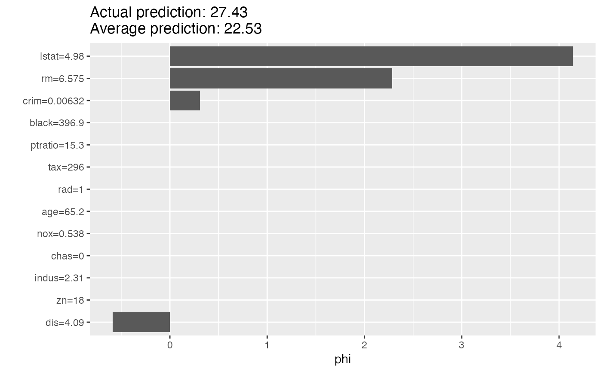
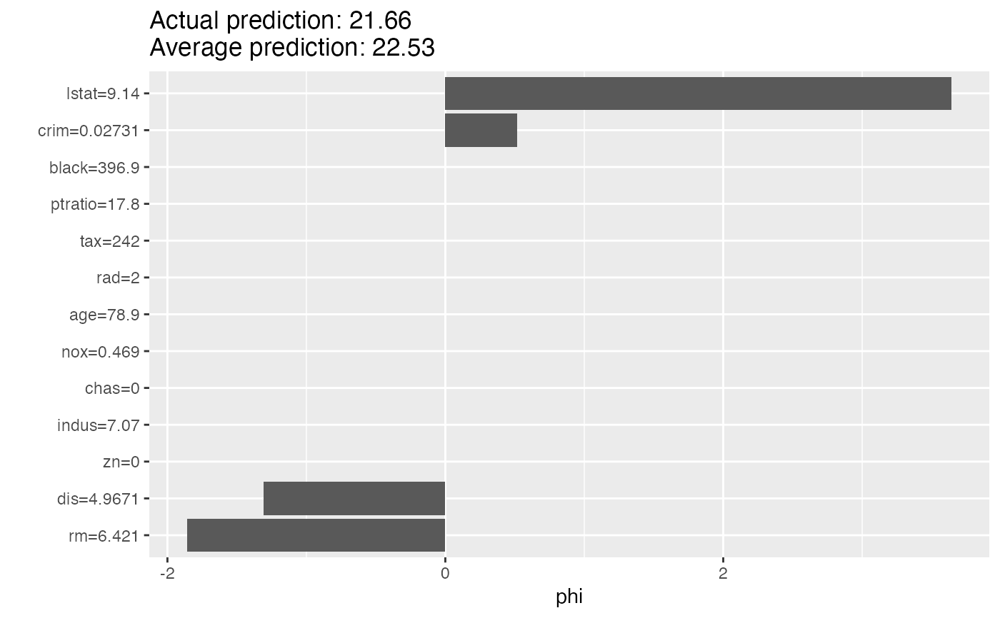

Shapley computes feature contributions for single predictions with the
Shapley value, an approach from cooperative game theory. The features values
of an instance cooperate to achieve the prediction. The Shapley value fairly
distributes the difference of the instance's prediction and the datasets
average prediction among the features.
For more details on the algorithm see https://christophm.github.io/interpretable-ml-book/shapley.html
Strumbelj, E., Kononenko, I. (2014). Explaining prediction models and individual predictions with feature contributions. Knowledge and Information Systems, 41(3), 647-665. https://doi.org/10.1007/s10115-013-0679-x
Shapley
A different way to explain predictions: LocalModel
iml::InterpretationMethod -> Shapley
x.interestdata.frame
Single row with the instance to be explained.
y.hat.interestnumeric
Predicted value for instance of interest.
y.hat.averagenumeric(1)
Average predicted value for data X.
sample.sizenumeric(1)
The number of times coalitions/marginals are
sampled from data X. The higher the more accurate the explanations
become.
Inherited methods
new()Create a Shapley object
Shapley$new(predictor, x.interest = NULL, sample.size = 100)predictorPredictor
The object (created with Predictor$new()) holding the machine
learning model and the data.
x.interestdata.frame
Single row with the instance to be explained.
sample.sizenumeric(1)
The number of Monte Carlo samples for estimating the Shapley value.
data.frame
data.frame with the Shapley values (phi) per feature.
explain()Set a new data point which to explain.
x.interestdata.frame
Single row with the instance to be explained.
library("rpart")
# First we fit a machine learning model on the Boston housing data
data("Boston", package = "MASS")
rf <- rpart(medv ~ ., data = Boston)
X <- Boston[-which(names(Boston) == "medv")]
mod <- Predictor$new(rf, data = X)
# Then we explain the first instance of the dataset with the Shapley method:
x.interest <- X[1, ]
shapley <- Shapley$new(mod, x.interest = x.interest)
shapley
#> Interpretation method: Shapley
#> Predicted value: 27.427273, Average prediction: 22.532806 (diff = 4.894466)
#>
#> Analysed predictor:
#> Prediction task: unknown
#>
#>
#> Analysed data:
#> Sampling from data.frame with 506 rows and 13 columns.
#>
#>
#> Head of results:
#> feature phi phi.var feature.value
#> 1 crim 0.4643321 2.202019 crim=0.00632
#> 2 zn 0.0000000 0.000000 zn=18
#> 3 indus 0.0000000 0.000000 indus=2.31
#> 4 chas 0.0000000 0.000000 chas=0
#> 5 nox 0.0000000 0.000000 nox=0.538
#> 6 rm 0.3249260 38.774596 rm=6.575
# Look at the results in a table
shapley$results
#> feature phi phi.var feature.value
#> 1 crim 0.4643321 2.202019 crim=0.00632
#> 2 zn 0.0000000 0.000000 zn=18
#> 3 indus 0.0000000 0.000000 indus=2.31
#> 4 chas 0.0000000 0.000000 chas=0
#> 5 nox 0.0000000 0.000000 nox=0.538
#> 6 rm 0.3249260 38.774596 rm=6.575
#> 7 age 0.0000000 0.000000 age=65.2
#> 8 dis -0.9612341 11.237574 dis=4.09
#> 9 rad 0.0000000 0.000000 rad=1
#> 10 tax 0.0000000 0.000000 tax=296
#> 11 ptratio 0.0000000 0.000000 ptratio=15.3
#> 12 black 0.0000000 0.000000 black=396.9
#> 13 lstat 4.2741975 52.433890 lstat=4.98
# Or as a plot
plot(shapley)

# Explain another instance
shapley$explain(X[2, ])
plot(shapley)

if (FALSE) {
# Shapley() also works with multiclass classification
rf <- rpart(Species ~ ., data = iris)
X <- iris[-which(names(iris) == "Species")]
mod <- Predictor$new(rf, data = X, type = "prob")
# Then we explain the first instance of the dataset with the Shapley() method:
shapley <- Shapley$new(mod, x.interest = X[1, ])
shapley$results
plot(shapley)
# You can also focus on one class
mod <- Predictor$new(rf, data = X, type = "prob", class = "setosa")
shapley <- Shapley$new(mod, x.interest = X[1, ])
shapley$results
plot(shapley)
}